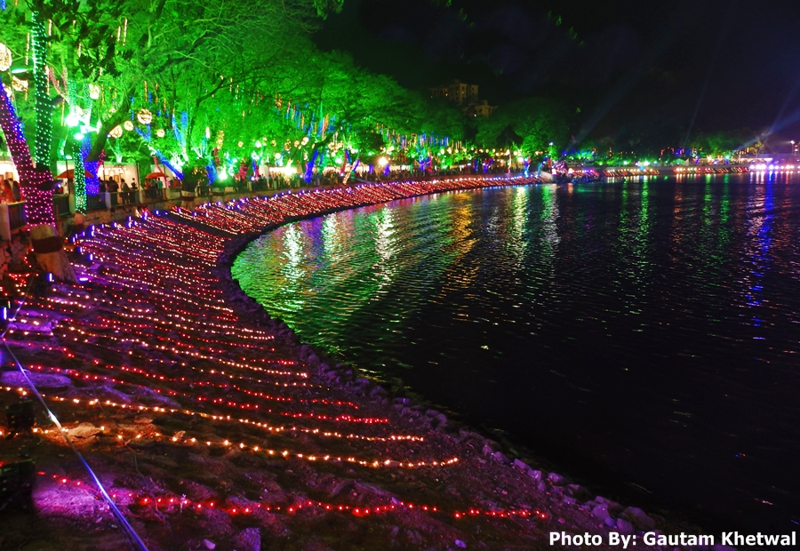
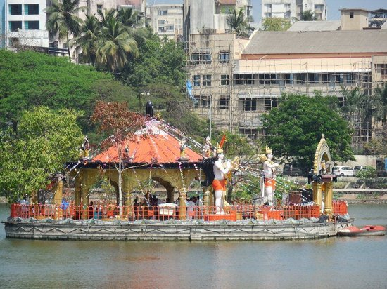
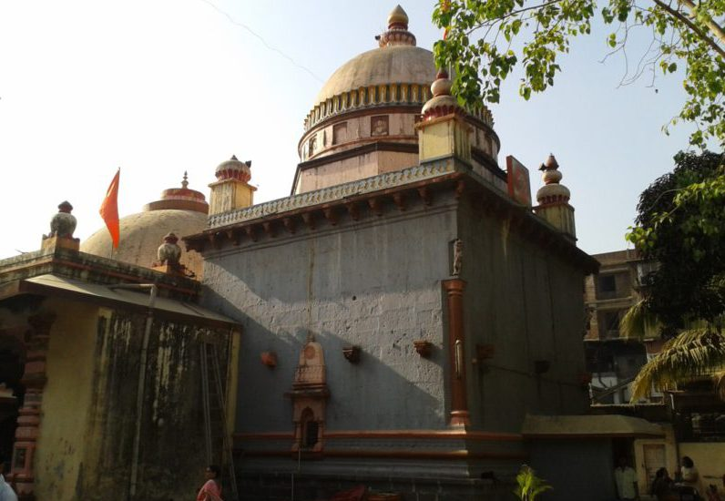

Name |
Info |
Image |
|---|---|---|
Upavan lake |
Upvan (or Upavan) Lake is located in Thane in the Indian state of Maharashtra. Here one can also view thousands of Ganpati idols which are brought here for immersion on final day of Ganeshotsav. This is one of the recreational areas for people who live in Thane. It is one of the biggest lakes in Thane, surrounded by Yeoor Hills, and lies in the Pokhran-II area. One of the eco friendly lake of city, Upvan Lake is regarded as Thane's ‘lover's paradise’. |
 |
Talao Pali |
Masunda Lake, also known as Talavpali Lake, is a lake situated in Thane , India. It is considered to be among the most picturesque lakes in the state of Maharashtra. The lake is home to a small island with a Shiv temple on it |
 |
Kopineshwar Temple |
Kopineshwar Mandir (also Kaupīnēśvar Mandir) (Marathi: कौपिनेश्वर मंदिर) is a temple dedicated to the Hindu god Shiva and is considered as the patron god of Thane. The Shivalinga inside the temple is considered as one of the largest in Maharashtra. |
 |
Gaimukh creek |
'Gaimukh' is nothing but an endpoint of "Thane city", and a part of 'Vasai Creek' flows from here. The 'Gaimukh creek' is about 13 km from Thane Railway station near Ghodbunder road. There's Gaimukh temple on the way, hence this area is known as Gaimukh. |